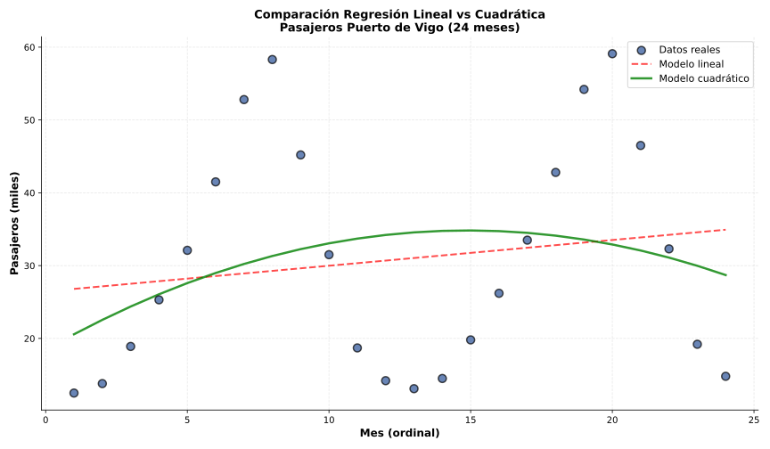

¿Cuándo usar regresión cuadrática?

Ej 1 (Contexto Vigo): Pasajeros mensuales Puerto de Vigo (cruceros + barcos Cíes) 2024-2025. Comparar R²:
¿Por qué la diferencia? ¿Cuál usar?
Explicación del fenómeno:
Decisión: Usar modelo cuadrático para predicciones dentro del año observado.
Limitación: No usar para predictos a 2-3 años vista sin ajustar, porque la parábola no captureará múltiples ciclos (para eso necesitaríamos modelos sinusoidales).
Ej 2: Parábola ajustada: \(y = -0.5x^2 + 6x + 2\)
a) ¿Es una parábola cóncava o convexa?
b) Calcular el vértice (valor x donde alcanza máximo/mínimo)
c) ¿En qué valor de x alcanza el extremo?
a) Concavidad:
b) Vértice (coordenada x):
c) Valor máximo:
Interpretación: La función alcanza su máximo de 20 cuando x = 6.
Ej 3 (Comparativa): Para datos de temperatura vs ventas helados:
| Modelo | Ecuación | R² |
|---|---|---|
| Lineal | y = 12x + 50 | 0.78 |
| Cuadrático | y = -0.3x² + 18x + 10 | 0.94 |
¿Cuál elegir y por qué? ¿Qué indica el coeficiente negativo de x² en el modelo cuadrático?
Elección: Modelo cuadrático (R² = 0.94 vs 0.78)
Interpretación del coeficiente -0.3:
Vértice (temperatura óptima):
Las ventas máximas ocurren alrededor de 30°C.